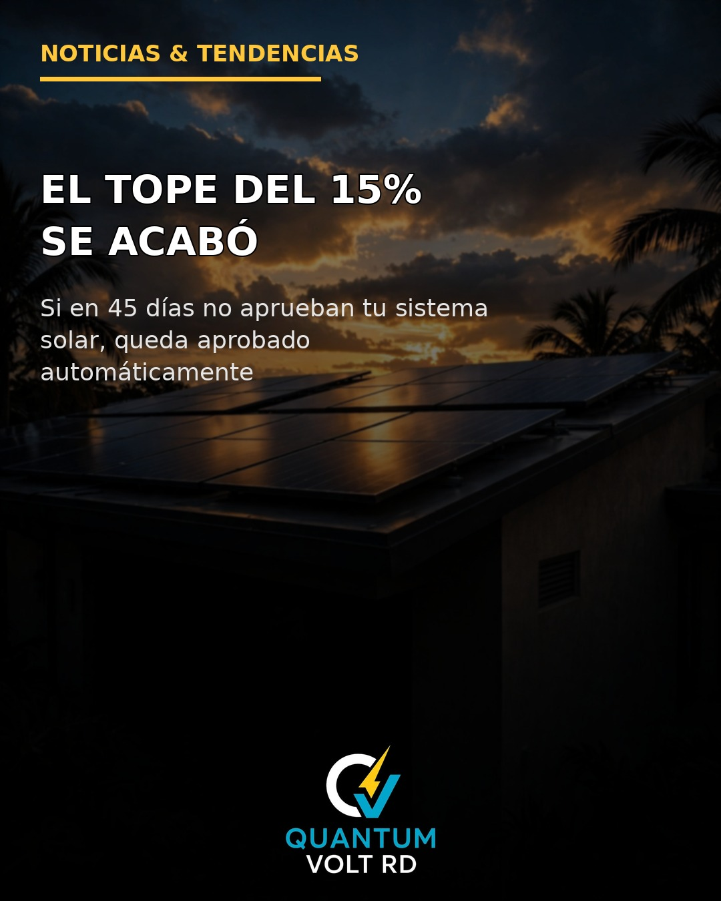

Noticia · 19 de noviembre de 2026
Se acabó el tope del 15% para tu panel solar en RD
19 de noviembre de 2026 · Energía solar · República Dominicana

La Superintendencia de Electricidad (SIE) eliminó el tope del 15% por circuito que limitaba cuánta energía solar se podía inyectar a la red. Con la Resolución SIE-007-2026-REG, la capacidad de un sistema ya no la define un porcentaje fijo, sino un estudio técnico de la red en cada caso.
Si no te responden en 45 días, queda aprobado
La resolución introduce el silencio administrativo positivo: si la distribuidora no aprueba tu sistema en 45 días, queda aprobado automáticamente. Antes el trámite podía durar hasta 4 meses. Es el cambio que muchos estaban esperando para dar el paso a la solar sin quedarse esperando una respuesta.
El crédito por tus excedentes sube al 100%
Además, el crédito por la energía que inyectas a la red sube del 75% al 100%, y el medidor bidireccional va gratis. En otras palabras: cada kilovatio que tu techo produce de más vale el doble que antes, y no pagas el medidor que lo mide.
Qué significa para tu casa
Menos trabas, más sol trabajando para tu factura. En Quantum Volt RD instalamos tu sistema solar con el trámite y la interconexión incluidos, para que empieces a ahorrar desde el primer mes.
Cotiza tu sistema solar por WhatsApp: 829-778-9089Fuentes
- Resumen, 17 de noviembre de 2026: Resolución para paneles solares elimina tope por circuito
- Superintendencia de Electricidad (SIE): sie.gob.do
← Volver a la página principal de Quantum Volt RD · Ver todas las noticias →